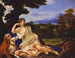

From
the collection

Giovanni
Battista Gaulli (Baciccio)
Diana the Huntress
About 1690
Oil on canvas
H.63-1/2 x W.83-1/4 in.
The Frances E. Andrews Fund
In 1690, Cardinal Pietro Ottoboni commissioned this painting of Diana, the Roman goddess associated with the moon, chastity, and hunting. She is shown resting under a tree after the chase, accompanied by her dogs. Illumined by a cool, clear light, she gazes into the middle distance, where her entourage of nymphs hunts wild boar. On the ground beside her are a bow and a quiver of arrows; at her feet lies her quarry, a dead stag.
The sculptural delineation of form and the rich coloration are typical of Gaulli's work. Here, the dogs have been represented with particular care, almost as portraits. The greyhound wears a collar decorated with the double-headed eagles of the Ottoboni coat of arms.